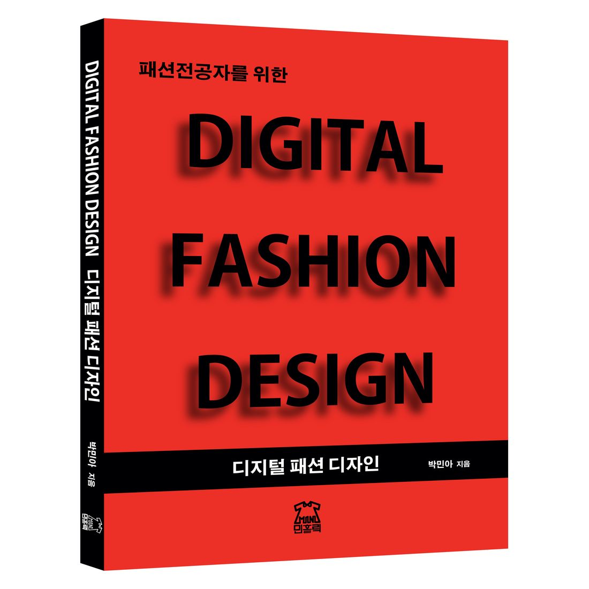
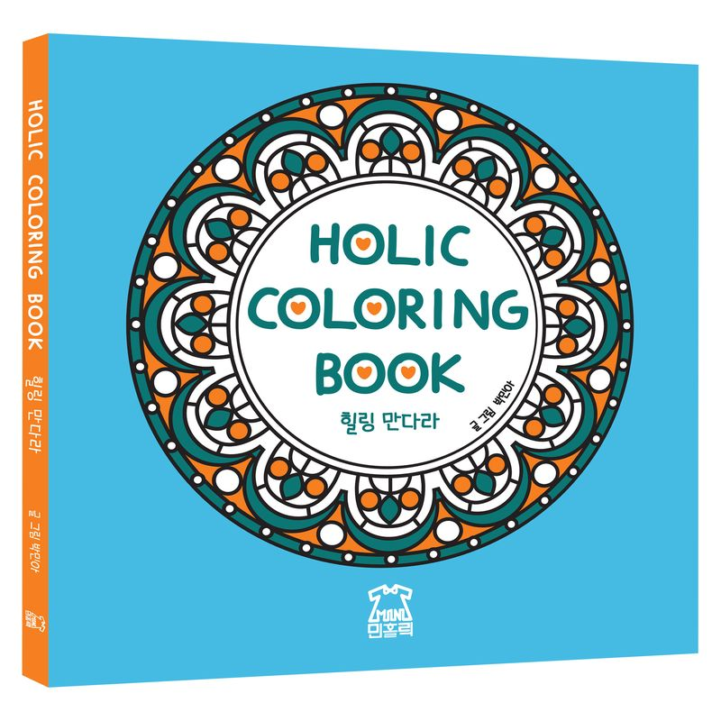
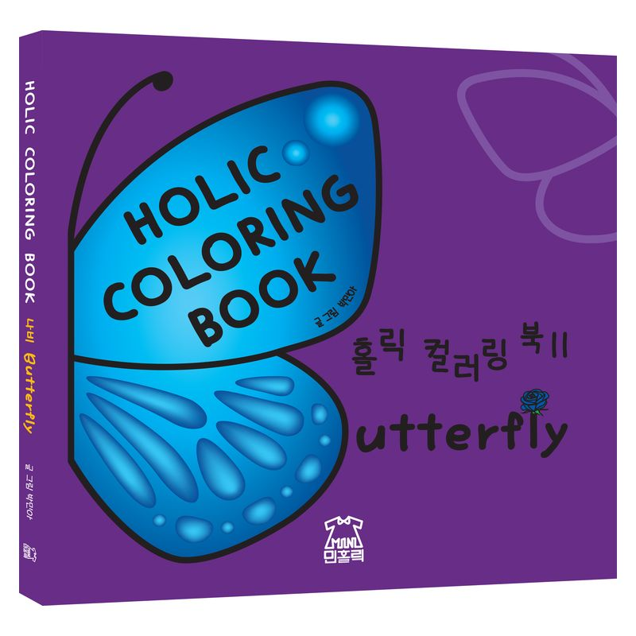
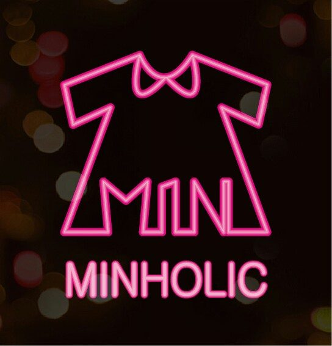

도서출판 민홀릭 · 패션 전공 교재
패션전공자를 위한
디지털 패션 디자인
DIGITAL FASHION DESIGN
일러스트레이터와 포토샵을 활용한 디지털 패션 디자인. 기초 기능부터 실무에서 바로 쓰는 작업 방식까지, 한 학기 강의 흐름에 맞춰 실습 중심으로 담았습니다.
- 저자
- 박민아
- 개정
- 2020 개정판
- ISBN
- 979-11-962091-1-7
- 설립
- 2017
출간 도서
PUBLICATIONS
01
디지털 패션 디자인
DIGITAL FASHION DESIGN
일러스트레이터 CC와 포토샵 CC의 기본 기능부터, 패션 실무에서 바로 쓰는 작업 방식까지 실습 중심으로 구성한 전공 교재입니다.
02
비즈니스 엑셀
FASHION BUSINESS EXCEL
패션 실무에서 필요한 엑셀 작업을 다룹니다.

03
홀릭 컬러링 북 힐링 만다라
HOLIC COLORING BOOK MANDALA
만다라 도안으로 구성한 컬러링 북입니다.

04
홀릭 컬러링 북 II 나비
HOLIC COLORING BOOK II BUTTERFLY
나비 도안으로 구성한 컬러링 북입니다.
출판사 소개
ABOUT
도서출판 민홀릭은 2017년부터 패션 전공 교재를 펴내고 있습니다. 프로그램 매뉴얼을 옮겨 적는 대신, 패션을 전공하는 사람이 실제로 부딪히는 순서대로 내용을 배치하는 것을 원칙으로 삼습니다.
한 학기 분량의 강의 흐름, 과제로 제출할 수 있는 결과물, 그리고 졸업 후 실무에서 다시 펼쳐볼 수 있는 참고 항목. 이 세 가지가 한 권 안에 같이 있어야 교재라고 생각합니다.
교재 채택, 강의용 실습 파일, 재고에 대한 문의는 언제든 연락 주세요.
CONTACT
- minholicbooks@gmail.com
- CHAT
- @MINHOLICBOOKS
- YOUTUBE
- @minholicbooks2025
- STUDY
- cafe.naver.com/minholicbook

YOUTUBE 채널→